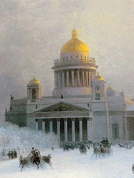
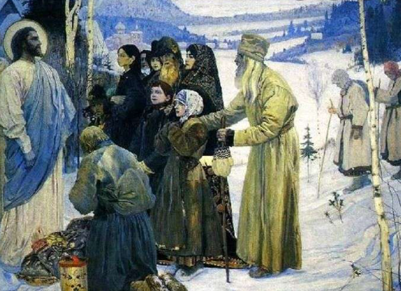

| Viața Personală | Evenimentele majore din viața lui Dostoievski simularea de execuție, închisoarea în Siberia și crizele de epilepsie erau atât de cunoscute încât, chiar și în afară de munca sa, Dostoievski a obținut o mare celebritate în timpul său. Într-adevăr, el și-a valorificat frecvent legenda, bazându-se pe incidentele extrem de dramatice din viața sa în crearea celor mai mari personaje ale sale. Chiar și așa, unele evenimente din viața lui au rămas întunecate în mister, iar speculațiile neglijente au căpătat, din păcate, statutul de fapt.
|
|  | Dostoievski a fost student la Academia de Inginerie Militară din Sankt Petersburg, o carieră de inginer militar fiind marcată pentru el de tatăl său. Dostoievski era evident nepotrivit pentru o asemenea ocupație. El și fratele său mai mare Mihail, care i-a rămas prieten apropiat și i-a devenit colaborator în publicarea revistelor, au fost încântați de literatură încă de la o vârstă fragedă. În copilărie și ca student, Dostoievski a fost atras de ficțiunea romantică și gotică, în special de lucrările lui Sir Walter Scott, Ann Radcliffe, Nikolay Karamzin, Friedrich Schiller și Aleksandr Pușkin. La scurt timp după ce și-a terminat diploma (1843) și a devenit sublocotenent, Dostoievski și-a demisionat pentru a începe o carieră periculoasă ca scriitor, urmând să trăiască din stiloul său.
|
|  | În Siberia, Dostoievski a experimentat ceea ce el a numit „regenerarea” convingerilor sale. El a respins atitudinea condescendentă a intelectualilor, care doreau să-și impună ideile politice în societate și a ajuns să creadă în demnitatea și bunătatea fundamentală a oamenilor de rând. El descrie această schimbare în schița sa Țăranul Marey (care apare în Jurnalul unui scriitor). Dostoievski s-a atașat profund și de Ortodoxia rusă, ca religie a oamenilor de rând, deși credința sa a fost mereu în război cu scepticismul său. Într-o scrisoare celebră, el descrie felul în care este însetată de credință "ca iarba uscată” și concluzionează: "Hristos mai degrabă decât cu adevărul.” |